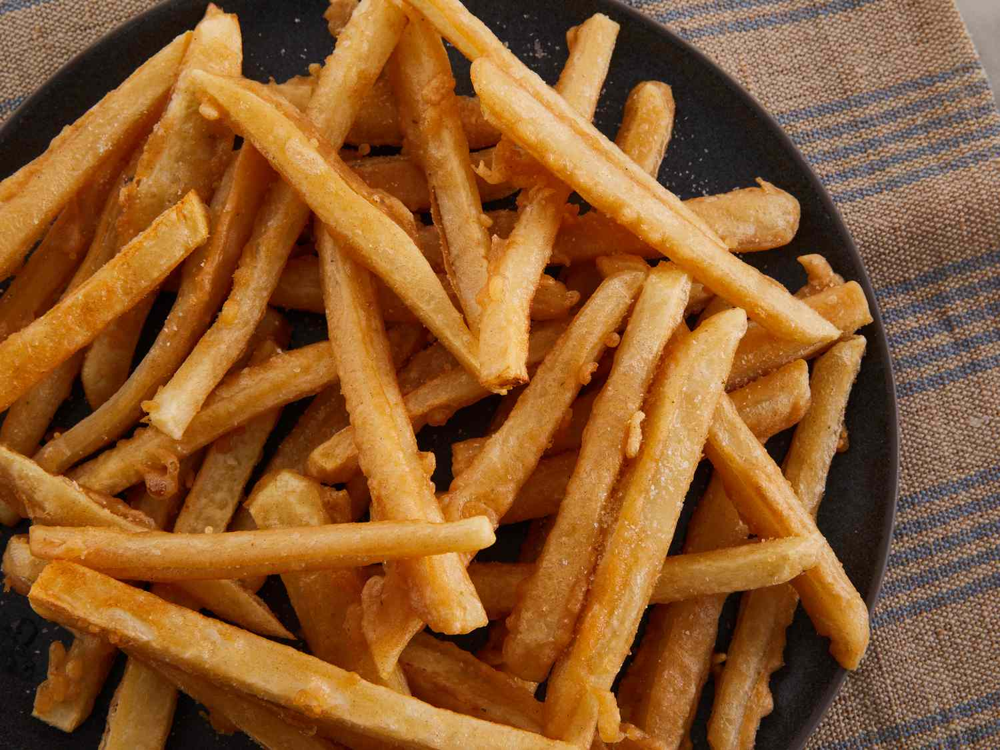

Homemade Crispy Seasoned French Fries
Description
Skip the drive-thru and make irresistible seasoned fries at home. This seasoned French fry recipe creates fries that are crispy on the outside, but fluffy and tender on the inside.
Ingredients
- 2 ½ pounds russet potatoes, peeled
- 1 cup vegetable oil for frying
- 1 cup all-purpose flour
- 1 teaspoon garlic salt
- 1 teaspoon onion salt
- 1 teaspoon paprika
- 1 teaspoon salt
- ½ cup water, or as needed
Steps
- Slice potatoes into French fries and place them into a large bowl of cold water to prevent them from turning brown.
- Heat oil in a heavy saucepan or large skillet to 350 degrees F (175 degrees C).
- While the oil is heating, sift flour, garlic salt, onion salt, paprika, and salt into a large bowl. Gradually stir in enough water to make a slightly thick batter that can be drizzled from a spoon.
- Drain fries and pat dry; dip into the batter one at a time.
- Lower fries carefully into the hot oil in batches to prevent them from clumping together. Fry until golden brown and crispy on all sides, about 7 to 10 minutes.
- Drain fries on a paper towel-lined plate.
- Serve hot and enjoy!